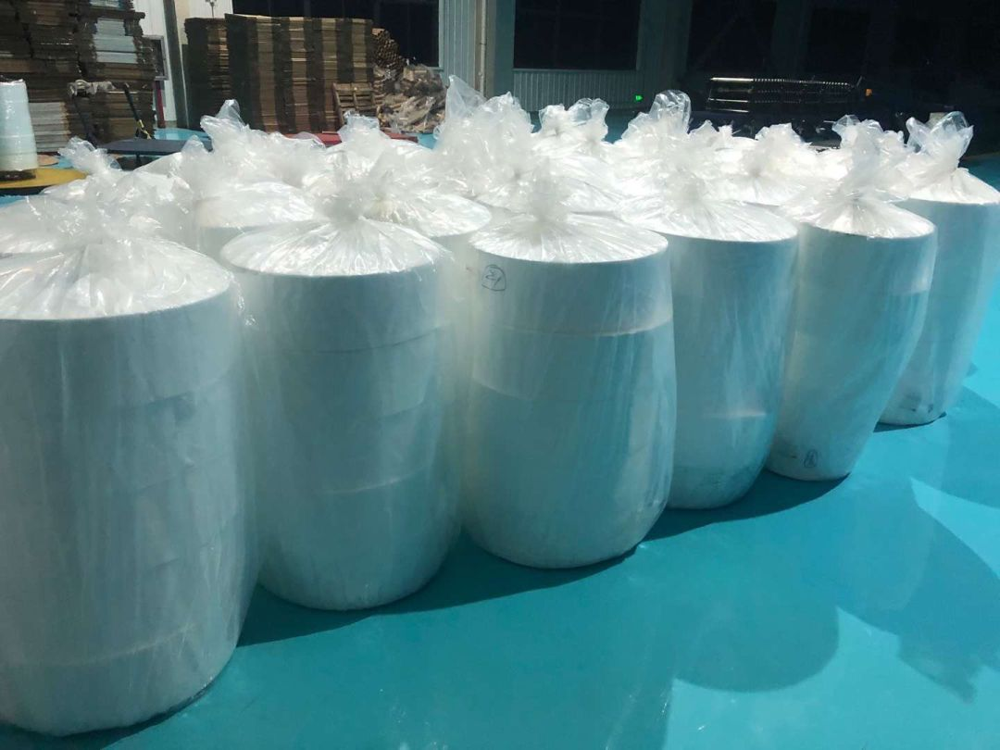
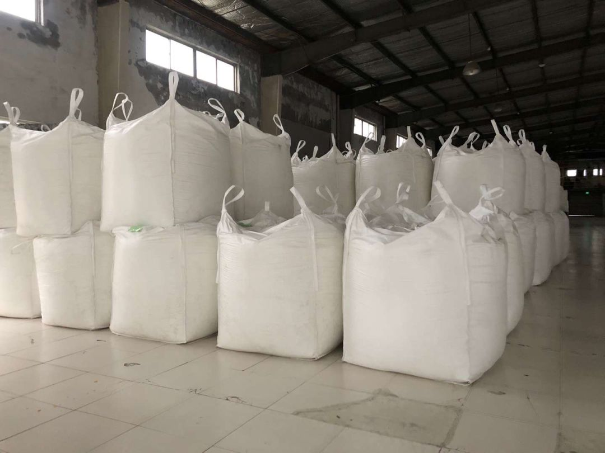

武汉“封城”后，志愿者车队故事
原文链接 备份链接 武汉“封城”后公共交通停运，自1月24日开始，路上开始出现民间自助形式的车队。私家车主轮班，车队昼夜不停，每天接送医护人员、运输医疗物资，每送一趟要用75%酒精浓度的消毒液喷洒一遍车辆，油钱、防护口罩、消毒液都自掏腰 …

作者 | 张庆宁
出品 | 棱镜·腾讯小满工作室
欢迎下载腾讯新闻APP，阅读更多优质资讯

1月27日中午，李舒看到我们发布的文章——《这座城市每天可生产165万个口罩，但急需原材料》，她通过北京市朝阳区一位读者辗转找来。
“我们已经复工，可以供应原材料。”李舒是江苏丽洋新材料股份有限公司（下称“江苏丽洋”）的采购人员，这是一家位于江苏省南通市的新三板上市公司。
江苏丽洋拥有两条熔喷布生产线，熔喷布是生产口罩过滤芯的核心原料。
当日下午16时，李明忠将李舒的原料信息和联系方式发到群内。李明忠是长垣市医疗器材同业公会会长，他搭建了一个微信群，群内有长垣市40多家医疗器械生产企业。
10多分钟后，李舒接到电话，电话那头是河南省鸿冉医疗器械股份有限公司（下称“鸿冉医疗”）的采购员林青，他需要一吨熔喷布，用于生产医用一次性口罩。
江苏省南通市到河南省长垣市，共计800多公里，车程8-10个小时左右。
两家企业却被运输难住了，因为找不到货车司机。

生产医用口罩滤芯的原料熔喷布

物流快递全网停运
27日晚上，江苏丽洋把这吨熔喷布打包，着手联系物流快递公司。
“找了好多司机，都不愿跑，担心高速公路不通畅。”当晚8点，李舒拨通李明忠电话，希望他想想办法，“能不能给我们开个证明上高速？”
李明忠咨询了长垣市当地货车司机。这位货车司机26日拉着物资去向北京，进出北京收费站，测完体温即被放行。
他又咨询了一位当地货车司机，确认高速公路长垣出入口同样只需测量体温。
“你直接和司机说，高速和空运都没问题。如果有问题，可以给我或鸿冉医疗的人打电话，我们再想办法。”听李明忠说完这话，李舒稍稍放心了。
虽是如此，南通绝大部分物流、快递公司尚未营业，在当地找到货车司机绝非易事，
“我们之前发往昆明、长春、乌鲁木齐的熔喷布，走的是顺丰空运。”江苏丽洋董事长尤祥银介绍，1月23日发往乌鲁木齐的那吨，运费两万多块，“在平常，发乌鲁木齐一样可以走陆路，一吨运费四五千元。”

江苏丽洋发往乌鲁木齐的熔喷布
一位物流业内人士表示，春节期间，只有顺丰、邮政在部分城市间提供有限度运输，京东在建有自营仓的城市提供末端配送，德邦等快递公司会在部分区域针对特定运输需求安排人员。
“除此之外，绝大多数物流、快递公司全网络停运。”这位物流业内人士称，之所以出现这种现象，是因在全国大物流16万亿的市场规模中，工业企业的原材料运输、半成品和零配件供应链、商贸批零运输占据绝对大头。
国家邮政局报告显示，2018年全国快递业务量507.1亿件，快递业务收入6038·4亿元，占到全国大物流市场规模的3.7%左右。
“工业加工企业春节基本歇业，社会物流需求大规模减少。再加上春节人口迁徙，线上购物需求明显减少，难以支撑起物流、快递企业的全国性运输网络。”这位物流业内人士称，相比正常营业，车辆空驶、转运场严重不饱和来说，全面停业是更好的减亏方式。
此次疫情出现，顺丰、德邦等快递公司发起绿色通道服务，运力主要来自企业提前预留和紧急调度的物流资源。
终于找到货车司机
南通到长垣只有800多公里，空运性比价太低，适合陆路运输。
李舒四处寻找司机。她咨询了韵达等快递公司南通网点，得到的回复是，“‘至少初八才接单营业，而且凑够一车才发货。’一车可以装50立方米的熔喷布，我们只发一吨，也就八九立方米。”
她又开始联系正在休假的快递公司司机，“看对方愿不愿接点私活。”
“有人开口要八千块，有人开口要九千块，”按照行规，这笔运费由鸿冉医疗支付，该公司采购员林青没有答应，“太贵了。平时从南通进吨货，司机的过路费、油费等成本一千多块，正常价格两三千块。”
“现在供货商价格高，物流又涨价，下一次进货接着涨咋办？”说这话时，林青正在公司忙活，鸿冉医疗同样要解决“封路”问题，“员工都住村里，村里不让他们出来，我们正发愁人手呢。”
该公司建有两条医用一次性口罩生产线，全负荷运转需要近百名员工。
27日深夜，李舒终于找到一位司机，“我们把价格谈到五千块。首先是对方跑过去一趟，只能空车回来，第二是现在是春节休假。不能让人家吃亏。”
28日9时许，这位司机在江苏丽洋厂区装货上车，又去另一工厂装了一批货，开上驶往长垣市的沈海高速。
他依旧有些忐忑，担心在高速公路上某个收费站被拦下。
行驶途中，一则新闻弹出手机屏幕：“公安部要求优先保障救护车辆、防疫车辆和运送医护人员、药品器械、民生物资等车辆通行。对未经批准擅自设卡拦截、断路阻断交通等违法行为，要立即报告党委、政府，依法稳妥处置，维护正常交通秩序。”
这位司机多少踏实了一些。
产业链正在苏醒
江苏丽洋董事长尤祥银操心的不是物流，而是熔喷布的原料供应。
该公司生产的熔喷布以聚丙烯为主要原料，具有过滤性、屏蔽性、绝热性和吸油性，用于生产口罩滤芯。
旗下医用口罩滤材规格分别是用于生产符合YY/T0969标准的医用一次性口罩滤芯、用于生产复合YY 0469-2011标准的医用外科口罩滤芯、用于生产符合GB 19083-2010标准的医用防护口罩（例如美国3M公司的N95口罩）滤芯。
“现在民众对口罩，尤其是对N95口罩的需求量特别大，”尤祥银说，N95口罩滤芯纤维直径0.3微米，过滤原理是静电吸附，适合医务人员在高危易传染的空气环境中佩戴，用于捕获空气中极小的颗粒物。
“一般老百姓配套口罩的目的是防范唾液等飞沫，医用一次性口罩和医用外科口罩应该够用了，没必要盲目追求N95这种高端产品，”尤祥银眼看着N95滤芯的价格暴涨，继而又推高聚丙烯等上游原料价格。
“聚丙烯同样不好搞，”尤祥银介绍，这类化工材料的生产企业除中石油、中石化等央企下属公司之外，绝大多数是民营企业，“春节开工的肯定不多，我们同样要四处找原料。”

江苏丽洋工厂内存放的生产原料
李明忠认为，口罩等医疗防护用品属于结构性短缺，“口罩生产商面临熔喷布、无纺布等原料短缺问题，这些原料厂缺少聚乙烯、聚丙烯等货源。这又需要化工材料产业链尽快启动生产。与此同时，物流等中间环节同样得动起来。”
但也不乏利好消息，例如江苏丽洋这类熔喷布原料商已经启动生产。
“27日上午，我们开始检修生产线，让机器先热起来，再把电和水检查了一遍。等到下午，两条生产线正式启动。”李舒表示，他们一天可以投入市场七吨左右的熔喷布。
不仅如此，天津泰达旗下天津泰达洁净材料有限公司拥有7条熔喷布生产线，总产能达到7000吨/年。
科技日报报道显示，泰达洁净根据疫情发展紧急启动了四条生产线，一天产能达到10吨，用于700万到800万只口罩的生产。
“随着时间推移，原材料跟上了，预计情况将有所改善。”据尤祥银观察，目前产业链上下游正在苏醒，“很多企业都像我们一样提前开工。”
得益于此，在产业链终端，鸿冉医疗这类长垣市口罩生产商同样筹备生产。
按照口罩生产流程，在熔喷布、无纺布等原材料到货后，先分切成小卷，放上生产线，通过高频焊接压制成口罩，再经过整理检查、人工装袋、灭菌16小时、解析库挥发灭菌气体两周之后，符合质量标准的口罩将通过物流、销售环节进入市场。
这吨800公里加急的熔喷布可用于70万到80万只医用一次性口罩的生产。
_（为保护受访者隐私，李舒、林青系化名。_）

感谢您的阅读，欢迎在文后留言并点击“在看”，留言点赞第一名且60以上，获得一个月腾讯视频会员哦~ （截止时间：下周一下午18：00）

聚焦中国科技创新，书写深度商业故事
欢迎关注深网公众号，阅读更多优质原创内容。


扫码查看腾讯新闻客户端相关文章

本文版权归“腾讯新闻”所有，如需转载请在文后留言，经允许后方可转载，并在文首注明来源、作者及编辑，文末附上棱镜二维码。
第564期
实习运营编辑：陈诗雨 黄贺

点击“阅读原文”，查看腾讯新闻客户端相关独家文章！
你“在看”我吗？

原文链接 备份链接 武汉“封城”后公共交通停运，自1月24日开始，路上开始出现民间自助形式的车队。私家车主轮班，车队昼夜不停，每天接送医护人员、运输医疗物资，每送一趟要用75%酒精浓度的消毒液喷洒一遍车辆，油钱、防护口罩、消毒液都自掏腰 …
原文链接 备份链接 《人物》记者向多位寻求捐赠的医护人员咨询，他们均表示，很多医院的医用外科口罩库存量大概在一个星期左右，「平常有时口罩也戴一天，如果不去视察病房，有的科室没有戴口罩的需求。」用得不多、存量少，脆弱的库存和供应系统很快被疫 …
原文链接 备份链接 新京报记者了解到，除了口罩之外，消毒液、护目镜、体温计等防护产品也出现了大量空缺。成都中光洗消剂有限公司总经理马灵告诉新京报记者，疫情发生之后，公司就开始加班加点生产消毒液。 全文2455字，阅读约需5分钟 1月28 …
原文链接 备份链接 作者 | 马关夏 出品｜深网·腾讯小满工作室 欢迎下载腾讯新闻APP，阅读更多优质资讯 这个春节，湖北武汉等地陆续发生新型冠状病毒感染的肺炎疫情牵动人心，面对严峻的防控形势，社会各方纷纷行动、驰援武汉。企业、明星捐钱捐 …
原文链接 备份链接 作者 | 张庆宁 出品 | 棱镜·腾讯小满工作室 大年初二（1月26日）这天，田书增一个小时之内，给人道了20多次歉。 每隔五到十分钟，这位河南省健琪医疗器械有限公司（下称“健琪医疗”）董事长就会接到一个电话，电话那头 …